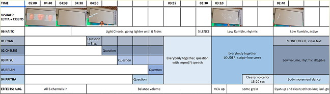

The Agent: Acoustic Automation and Biological Voice

The Agent is a site-specific acoustic performance that contrasts algorithmic automation with biological voice. Utilizing spoken word, reactive theatrical lighting, and spatial scenography, the piece critiques representation, agency, and individual autonomy within algorithmic networks. By translating algorithmic processing into an embodied acoustic environment, the performance examines how digital systems mediate human expression.
- Role: Spoken word artist, stylist, and scenographer
- Format: Acoustic performance and scenography
- Context: Ars Electronica Festival, Linz, Austria, 2023
